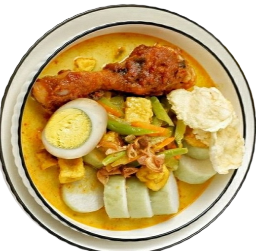

Resep Makanan Indonesia
Nasi Goreng

Bahan-bahan:
- Nasi putih - 2 mangkok
- Bawang putih - 3 siung, cincang halus
- Bawang merah - 5 butir, iris tipis
- Minyak goreng - 2 sendok makan
- Kecap manis - 2 sendok makan
- Saus sambal - 1 sendok makan
- Garam - secukupnya
- Telur - 2 butir
- Daun bawang - 2 batang, iris halus
- Mentimun - 1 buah, iris tipis
- Tomat - 1 buah, iris tipis
Langkah-langkah:
- Siapkan bahan-bahan dan alat yang diperlukan.
- Panaskan minyak di wajan.
- Tumis bawang putih dan bawang merah hingga harum.
- Masukkan nasi dan aduk hingga merata.
- Tambahkan kecap manis, saus sambal, dan garam secukupnya.
- Tambahkan telur dan aduk hingga matang.
- Tambahkan daun bawang, irisan mentimun, dan tomat sebagai hiasan.
- Nasi goreng siap disajikan.
Sate Ayam
Bahan-bahan:
- Daging ayam fillet - 500 gram, potong kotak
- Bawang putih - 3 siung, cincang halus
- Kecap manis - 3 sendok makan
- Minyak goreng - secukupnya
- Bumbu sate (bumbu kacang) - sesuai selera
Langkah-langkah:
- Rendam daging ayam dalam kecap manis dan bawang putih cincang selama 1 jam.
- Tusuk daging ayam yang telah direndam dalam tusukan sate.
- Panggang sate ayam di atas bara api hingga matang sambil sesekali diolesi dengan bumbu sate.
- Sajikan sate ayam dengan bumbu kacang.
Pisang Goreng
Bahan-bahan:
- Pisang raja - 4 buah, potong-potong
- Tepung terigu - 200 gram
- Tepung beras - 50 gram
- Gula pasir - 2 sendok makan
- Garam - 1/4 sendok teh
- Air - 200 ml
- Minyak goreng - secukupnya
Langkah-langkah:
- Campurkan tepung terigu, tepung beras, gula pasir, dan garam dalam sebuah mangkuk.
- Tambahkan air sedikitnya sambil diaduk hingga membentuk adonan yang kental.
- Panaskan minyak goreng dalam wajan dengan api sedang.
- Gulingkan potongan pisang ke dalam adonan tepung hingga seluruh bagian pisang terbalut tepung secara merata.
- Goreng pisang dalam minyak panas hingga kecokelatan dan matang.
- Tiriskan pisang goreng dari minyak, kemudian sajikan selagi hangat.
Lontong Sayur
Bahan-bahan:
- Lontong - 4 buah, potong-potong
- Kacang panjang - 100 gram, potong-potong
- Telur - 2 butir, rebus dan belah dua
- Labu siam - 100 gram, potong-potong
- Tauge - 100 gram
- Daun melinjo - secukupnya
- Daun salam - 2 lembar
- Serai - 1 batang, memarkan
- Santan - 200 ml
- Minyak goreng - secukupnya
Langkah-langkah:
- Rebus air hingga mendidih, kemudian masukkan daun salam, serai, dan lontong. Rebus hingga lontong matang.
- Tumis bumbu halus hingga harum, tambahkan kacang panjang, labu siam, dan daun melinjo. Aduk hingga rata.
- Masukkan santan, telur rebus, dan tauge. Aduk rata dan masak hingga mendidih.
- Tuangkan kuah lontong sayur ke dalam mangkuk saji yang berisi lontong.
- Lontong sayur siap disajikan.
Sayur Sop
Bahan-bahan:
- Wortel - 2 buah, potong-potong
- Kentang - 2 buah, potong-potong
- Kacang panjang - 100 gram, potong-potong
- Kol - 100 gram, potong-potong
- Jagung manis - 2 tongkol, potong-potong
- Ayam - 1 potong, potong-potong
- Daun bawang - 2 batang, iris halus
- Daun seledri - secukupnya
- Daun salam - 2 lembar
- Jahe - 1 ruas jari, memarkan
- Garam - secukupnya
- Merica - secukupnya
- Minyak goreng - secukupnya
Langkah-langkah:
- Rebus ayam dalam air hingga matang, kemudian suwir-suwir daging ayamnya.
- Tumis bumbu halus hingga harum, tambahkan daun salam, jahe, dan irisan daun bawang.
- Masukkan wortel, kentang, dan ayam suwir ke dalam tumisan. Aduk hingga rata.
- Tuangkan air secukupnya, masukkan kacang panjang, jagung manis, dan kol. Masak hingga sayur matang.
- Tambahkan garam dan merica secukupnya, aduk rata.
- Sajikan sayur sop panas dengan taburan daun seledri di atasnya.